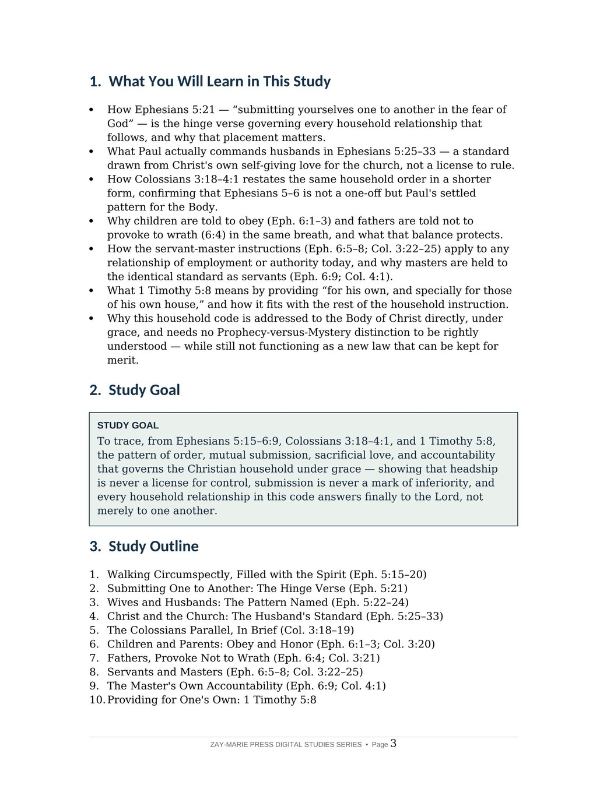
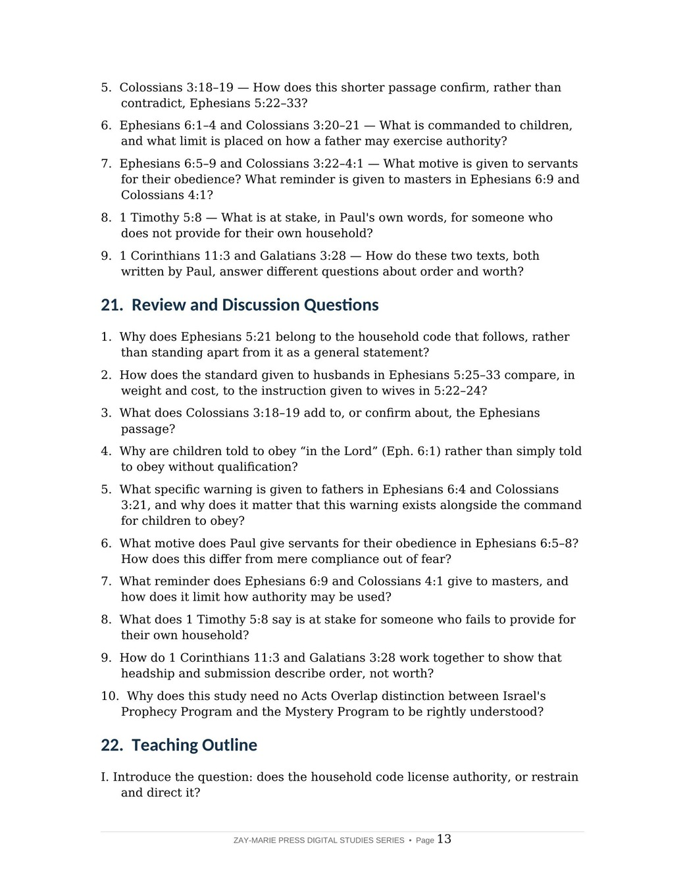

The Christian Household
Order, Love, and Accountability Under Grace
A Biblical Examination of Wives and Husbands, Children and Parents, and Servants and Masters in Paul's Letters to the Body of Christ
Ephesians 5 and Colossians 3 generate as much misuse as argument. Some read the household code as license for a husband or father to rule unquestioned. Others, uncomfortable with any language of submission, read past the passage entirely. Both skip the actual structure Paul builds — one that opens not with authority but with mutual submission, and that measures every figure of authority against a standard that leaves no room for self-interest.
This study traces the household code as Paul actually writes it: the hinge verse of Ephesians 5:21, the pattern named for wives and husbands, the far heavier standard set for husbands in Christ's own self-giving love, the shorter Colossians parallel, children and parents held to a mutual limit, servants and masters answering to the same Master in heaven, and 1 Timothy 5:8's plain word on providing for one's own house — closing with why submission is never inferiority and headship is never superiority.
Authority That Restrains Itself, Not Authority on Display
Paul opens the household code with a general command that governs everything after it: "submitting yourselves one to another in the fear of God" (Eph. 5:21). Every pair that follows — wife and husband, child and parent, servant and master — is a particular application of that mutual posture, not a one-sided list of demands on the party without formal authority. In every pair, the one holding authority receives the heavier, more self-limiting instruction: husbands are measured against Christ's own self-giving love (5:25–33), fathers are warned not to provoke to wrath (6:4), and masters are reminded they too have a Master in heaven who shows no partiality (6:9).
This is not a general study of the believer's identity in Christ, which Study 16 surveys broadly, nor a study of sanctification under grace, which Study 45 examines in its own right, nor a study of giving, which Study 47 traces from 2 Corinthians. It asks a narrower question: once every household relationship flows from grace rather than law, what does Paul actually require of each party, and where does that authority answer?
How These Studies Relate
Study 48 traces the household code's own architecture — mutual submission, the heavier standard on authority, and the limit that keeps headship from becoming control.
Study 22 — Prayer Under Grace Compare another daily practice of the believer reframed under grace rather than a Kingdom-era command, the same interpretive move this study applies to the household.
Study 45 — Sanctification Under Grace See the same pattern applied to holiness: practice flows from a standing already secured, rather than functioning as a covenant duty owed to keep it.
Study 47 — Giving Under Grace See the same "not by commandment, yet not without real accountability" pattern applied to the collection Paul entrusted to Titus and named brethren.
Trace the Pattern, the Standard, and the Limit
Mutual Submission First
See how Ephesians 5:21 governs every household pair that follows, before any is named.
Christ and the Church
Read the standard Ephesians 5:25–33 sets for husbands — self-giving love, not rule.
Children and Parents
Trace the obedience commanded in 6:1–3 alongside the limit placed on fathers in 6:4.
Servants and Masters
See how 6:5–9 binds both parties to the same Master in heaven, "no respect of persons."
Providing for One's Own
Read why 1 Timothy 5:8 calls this a test of the faith itself, not a lesser duty.
Submission Is Not Inferiority
See why headship and submission describe order and function, not worth (1 Cor. 11:3; Gal. 3:28).
Examine the Passages for Yourself
Ephesians 5:21
The hinge verse — mutual submission in the fear of God, before any household pair is named.
Ephesians 5:22–24
Wives and husbands — the pattern named, trust modeled on the church's relationship to Christ.
Ephesians 5:25–33
Christ and the church — the far heavier standard set for the husband's own love.
Colossians 3:18–19
The same two commands in compressed form, confirming Paul's settled pattern.
Ephesians 6:1–4
Children obey and honor; fathers are warned not to provoke to wrath.
Ephesians 6:5–9
Servants serve as unto Christ; masters answer to a Master in heaven who shows no partiality.
1 Timothy 5:8
Providing for one's own house named a practical test of the faith, not optional piety.
1 Corinthians 11:3; Galatians 3:28
Two texts, both Paul's own, that show order and worth answer different questions.
The Hinge the Whole Code Turns On
"Submitting yourselves one to another in the fear of God" is not canceled by the specific commands that follow — it is the posture that keeps every one of them from becoming self-serving.
Ephesians 5:21 is easy to read past, since it often sits as the closing line of one paragraph rather than the header of the next. But it shares its grammar with 5:18's "be filled with the Spirit" — mutual submission is a Spirit-filled disposition of the whole congregation, stated before Paul ever narrows the focus to a single household pair.
Preview the Study Before You Purchase
Click any page to enlarge it for reading.
{kind=link}
{kind=link}

What You Will Learn
See the study's goal, outline, and the question it sets out to answer.
{kind=link}

Review and Discussion Questions
See the kind of questions this study asks readers to work through for themselves.
A Focused Study Built for
Understanding and Teaching
15-Page In-Depth Biblical Study
A careful study of the household code, grounded in Paul's own letters.
14 Core Teaching Sections
Progress from mutual submission through every household pair to 1 Timothy 5:8.
Key Distinctions to Retain
Keep the hinge verse, the heavier standard on authority, and the worth/order distinction clear.
Review and Discussion Questions
Test the study's distinctions concerning submission, headship, and accountability.
Teaching Outline
A structured framework for teaching the household code with precision.
Guided Further Study
Return to 1 Peter 3, Titus 2, and Philemon, with directed questions.
Scripture-Tracing Exercise
Trace the study's key passages across Ephesians, Colossians, and 1 Timothy in their own context.
Final Synthesis Exercise
Bring the evidence together in one coherent, Scripture-based explanation.
The Christian Household
15-page digital PDF · For personal use
Want More Than a Focused Study?
Digital Studies examine particular biblical subjects and difficult passages. The 40-lesson Biblical Hermeneutics course teaches a complete, repeatable method for establishing meaning in context, determining proper assignment, and making responsible application.